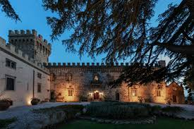

Café Slottshagens historia
Välkommen till Café Slottshagen! Vårt kafé är beläget i gårdens norra flygel och byggnadens historia sträcker sig tillbaka till 1820-talet. Här har vi skapat en unik plats där du kan njuta av nybakta scones, läckra smörgåsar och ett brett utbud av teer och kaffe i en historisk miljö. Herrgården ligger naturskönt belägen med endast ett stenkast från havssviken och en kort promenad från bussar och pendeltåg. Kontakta oss gärna för information och bokningar!